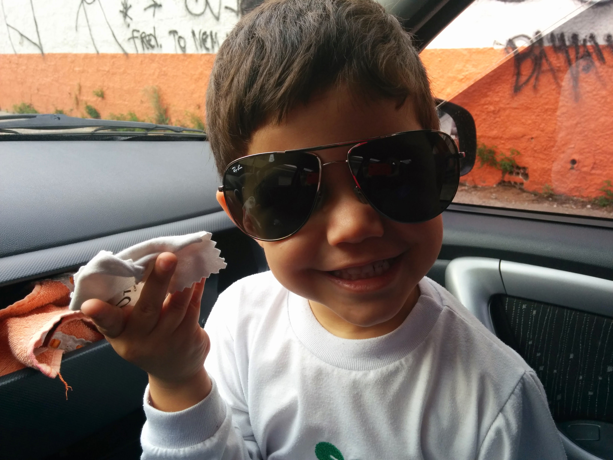
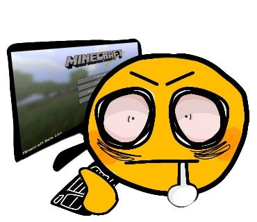
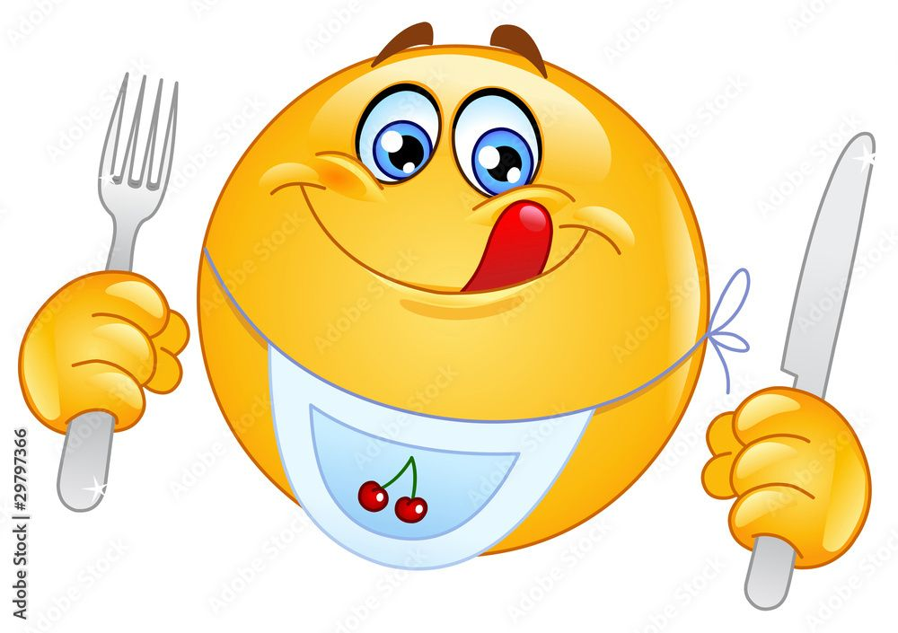

Oie! Prazer em conhecer vocês.
Caio Campelo Rocha.
Um pouquinho sobre mim, meus hobbies e os lugares que fazem parte da minha história.
Me conheça
01 / apresentação
Quem é o Caio?
Oie! Prazer em conhecê-los! Me chamo Caio, e nasci em São Paulo, Brasil, mas já morei na capital, Barueri e, atualmente, em Osasco. Moro com meu pai e minha mãe, e tenho uma irmã mais velha chamada Lara, que faz faculdade de cinema em Foz do Iguaçu.
De São Paulo, com várias histórias para contar.
02 / coisas que eu amo
Meus hobbiezinhos
Sete jeitos de passar o tempo e me divertir.

Jogar games

Comer bem
Viajar
Programar
Aprender
Ler notícias
03 / fatos aleatórios
Curiosidades criativas com bolhas.
Cinco coisas que talvez você não imaginasse sobre mim.
- Sou completamente viciado em Pokémon e Brawl Stars;
- Não sei cozinhar quase nada, mas se tem algo que sei fazer é risoto com fraldinha;
- Quase morri incendiado quando tinha 3 meses de idade;
- Já fiz um mini-intercâmbio cultural para a Inglaterra e a França;
- Toquei bateria com 2 bandas antes de entrar para a escola.
04 / memórias de viagem
Melhores lugares que já visitei
Um álbum de alguns lugares que marcaram minha vida. Clique nas fotos para conhecer cada destino!

05 / wishlist
Lugares que desejo visitar
Os próximos destinos da lista de sonhos. Um dia eu chego lá!